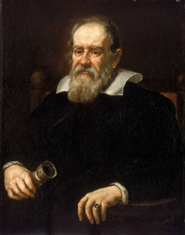
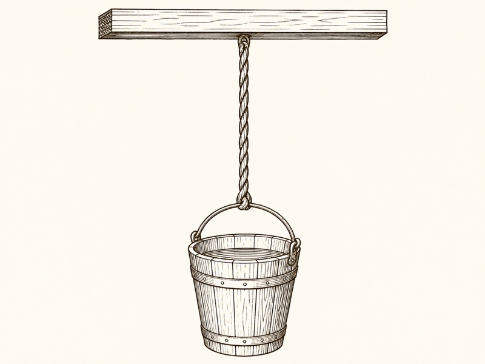
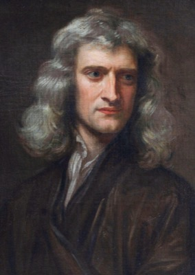
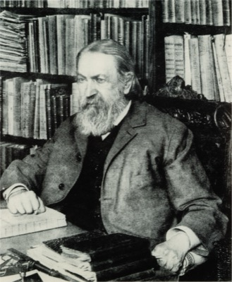
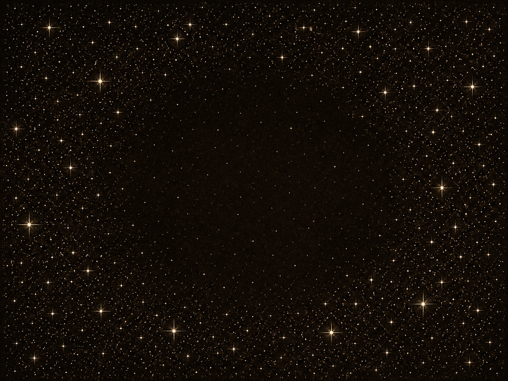
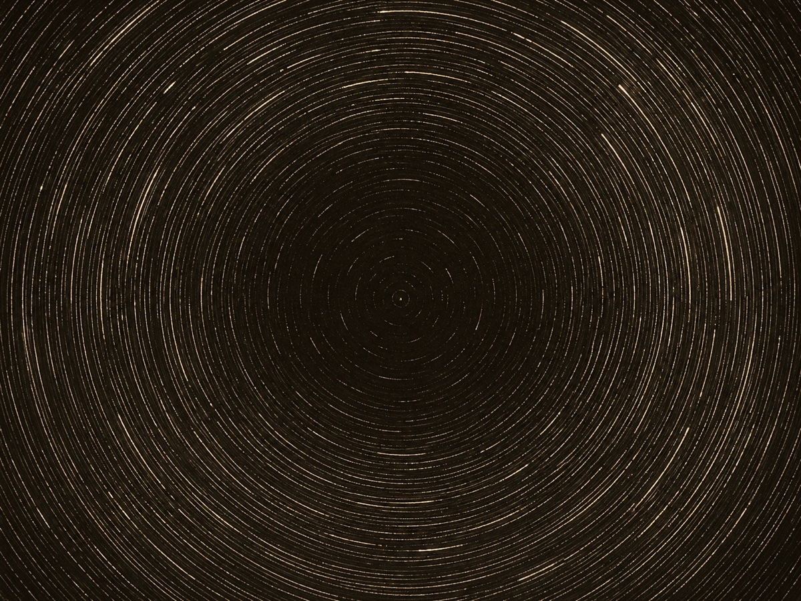
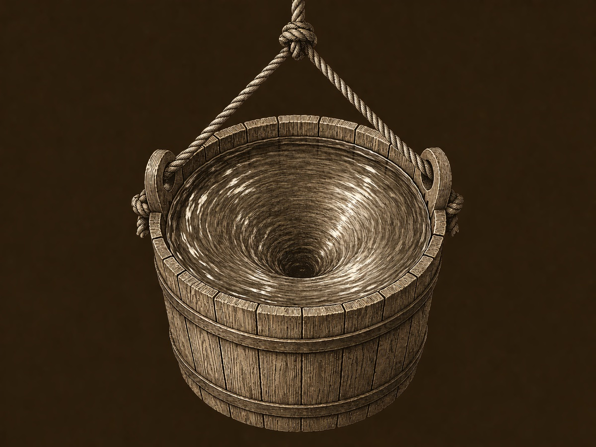
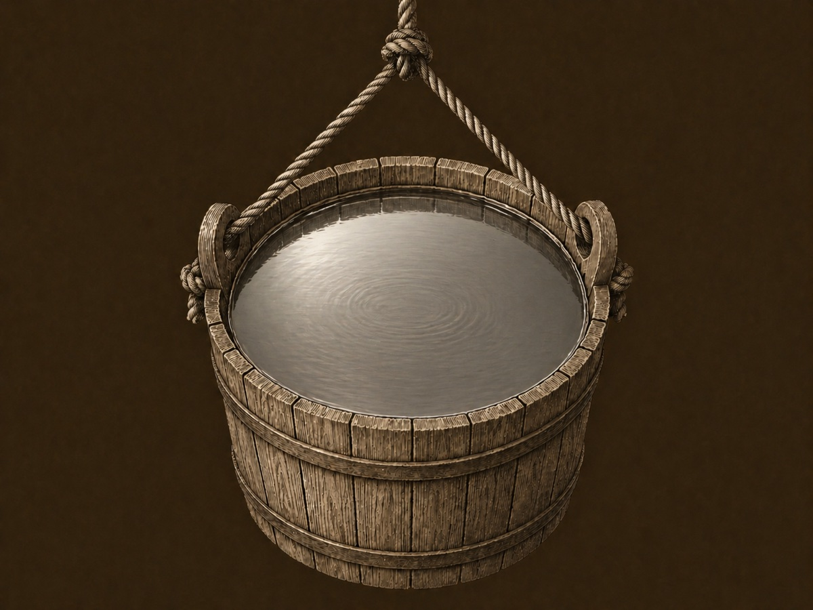

ガリレオの船
1632年、イタリア・フィレンツェ。ガリレオ・ガリレイは『二大世界体系についての対話』を書き上げ、メディチ家メディチ家15〜18世紀にフィレンツェ・トスカーナ大公国を支配したイタリアの大貴族。銀行業で台頭し、ルネサンス期に芸術家・科学者の最大の庇護者となった。ガリレオは1610年に木星の衛星を発見した際、当時のトスカーナ大公コジモ2世にちなんで「メディチ星」と命名し、宮廷哲学者の地位を得た。『対話』はその子フェルディナンド2世への献呈本である。への献呈本を刷り上げる。本のなかで彼は、地球が動いているという主張に対する、当時もっとも素朴で、もっとも強い反論に答えなければならなかった。「もし地球が動いているなら、空に投げ上げた石は、なぜ西に取り残されないのか?」「もし地球が回っているなら、なぜ私たちは風を感じないのか?」。彼が用意した答えは、数式でも観測データでもなく、一隻の船の話だった。
対話の登場人物のひとり、サルヴィアーティが語る。ある大きな船を想像してくれ。波もなく、揺れもなく、まっすぐに進む船を。その船室の奥深く、窓のない部屋に閉じこもる。中には、蝶を数匹、水を張った鉢に泳ぐ魚を数匹、そして天井から滴り落ちる水を受ける小さな器を用意する。船が止まっている間、これらをよく観察する。蝶は四方に等しく飛び、魚は鉢のなかをどこへでも泳ぎ、水滴はまっすぐに器の真ん中へ落ちる。

Galileo Galilei
1564 — 1642 / イタリアの天文学者・物理学者
望遠鏡を磨き、木星の衛星と金星の満ち欠けを観測し、コペルニクスの体系を支持した。1632年に『対話』を発表し、翌年ローマ教皇庁の異端審問にかけられる。船室の比喩は、対話第二日のサルヴィアーティの発言として現れる。後世「ガリレオの相対性原理」と呼ばれる思想の原典である。 Wikipedia ↗
Shut yourself up with some friend in the main cabin below decks on some large ship, and have with you there some flies, butterflies, and other small flying animals. Have a large bowl of water with some fish in it; hang up a bottle that empties drop by drop into a wide vessel beneath it. With the ship standing still, observe carefully …
大きな船の主船室、甲板の下の部屋に、友人と一緒に閉じこもってみたまえ。そこに蝿、蝶、その他の小さな飛ぶ動物を数匹用意する。魚の入った大きな水の鉢を置き、その下に広い器を置いて、上の瓶から滴を一滴ずつ落とす。船が静止しているうちに、よく観察するのだ……
— Galileo Galilei, Dialogo sopra i due massimi sistemi del mondo(1632), 第二日 / Stillman Drake 訳, 1953
それから、と彼は続ける。船を出航させ、好きな速さで、好きな方向にまっすぐ走らせる。波がなく、揺れがなく、加速もしない、ただの等速直線運動。船室にもう一度入って、同じように観察する。何が変わるか?
何も変わらない。蝶は四方に等しく飛ぶ。魚は鉢の中をどこへでも泳ぐ。水滴はまっすぐに器の真ん中へ落ちる。船室のなかにいる人間が、自分が動いているかどうかを判別する手段は、ひとつもない。窓を開けて外の海面を見るまで、自分の足下が時速二十ノットで進んでいるのか、港に係留されているのか、区別がつかない。
Fig 1 — 3つの観察対象。船が静止していようと等速で進んでいようと、ふるまいは変わらない。
これがガリレオの結論である。等速直線運動は、内部からは判別できない。地球が太陽のまわりを回っていようと、私たちが大気ごと一緒に動いている限り、空気のなかの石は西に取り残されない。私たちが風を感じないのは、地球が動いていない証拠ではなく、地球と一緒に動いているからにすぎない。後世にこの命題は ガリレオの相対性原理ガリレオの相対性原理すべての慣性系(等速直線運動する基準系)で力学法則は同じ形をとる、という主張。「内部の実験で、その系が動いているか止まっているかを判別する方法はない」と言い換えられる。一九〇五年の特殊相対性理論で、力学だけでなく電磁気学・光学にも拡張された。 と呼ばれることになる。
よくある誤解
動いているなら、何かしら違いを感じられるはず。エンジンの音、振動、風圧——どこかに「動いている証拠」があるはずだ。
実際は
音や振動や風圧は、加速度や摩擦の証拠であって、運動そのものの証拠ではない。等速直線運動では、それらすべてを取り除ける。完璧に滑らかな船室では、「動いているかどうか」を内部の実験で確かめる方法は存在しない。
この主張は、地動説への決定的な擁護になっただけでなく、もっと深いところに楔を打ち込んだ。「動いている」とは、絶対の事実ではなく、何かに対しての関係でしかない。船は港に対して動いているが、船室の蝶に対しては動いていない。地球は太陽に対して動いているが、私たちに対しては動いていない。動きとは、いつも二つのものの間に置かれた言葉なのである。
"The cause of all these correspondences of effects is the fact that the ship's motion is common to all the things contained in it, and to the air also."
これらの結果がすべて一致する原因は、船の運動が、船の中に含まれるすべてのもの——空気を含めて——に共通して与えられている、というその一点にある。
— Galileo Galilei, Dialogo(1632), 第二日・サルヴィアーティの言葉 / Stillman Drake 訳, 1953
ところが、この美しい結論には、ひとつだけ厄介な穴があった。等速直線運動は内部から判別できないが、回転は違う。船が円を描いて旋回し始めれば、蝶も魚も水滴も即座に外側へ偏る。ガリレオもそれは知っていた。回転は内部から見える。直進は見えない。なぜ、この2種類の運動はこんなにも違うのか。この問いに、55年後のイギリスで、もう一人の物理学者が手を伸ばすことになる。
ニュートンのバケツ
1687年7月5日、イギリス・ロンドン。エドモンド・ハレーの私財投入によって、王立協会名義で一冊のラテン語書物が刊行された。アイザック・ニュートン著『自然哲学の数学的諸原理』——通称『プリンキピア』。三巻からなるこの本の冒頭、定義の章を終えたあと、運動の三法則に入る前の場所に、注釈と呼ばれる長い文章が置かれている。スコリウムScholiumラテン語で「学術的な注釈」の意。プリンキピアでは定義や法則のあとに長文の注釈が置かれ、本文では数学的に厳密に定義しきれなかった「絶対空間」や「絶対時間」の概念を、思考実験つきで説明する場として機能した。バケツの議論はここに登場する。 と呼ばれる、定義の余白の議論である。
そこにニュートンは奇妙な実験を書き残した。一本の長いロープに、水を入れたバケツを吊るす。ロープを何度もねじって、いったん固定する。バケツも水も、はじめは静止している。それからロープを離す。ねじれが戻ろうとして、バケツは回り始める。やがて、四つの段階が順に現れる。


Isaac Newton
1643 — 1727 / イギリスの数学者・物理学者
ケンブリッジ大学トリニティ・カレッジで微分積分学・万有引力・運動の三法則を体系化し、1687年に『プリンキピア』を刊行した。バケツ実験は同書冒頭スコリウムの中で、絶対空間・絶対時間・絶対運動の概念を導入するための鍵として提示される。回転だけが「絶対の運動」として残る、というのが彼の主張だった。 Wikipedia ↗
If a vessel, hung by a long cord, is so often turned about that the cord is strongly twisted, then filled with water, and held at rest together with the water; after, by the sudden action of another force, it is whirled about in the contrary way, and while the cord is untwisting itself, the vessel continues for some time in this motion; the surface of the water will at first be plain, as before the vessel began to move; but after that, the vessel by gradually communicating its motion to the water, will make it begin sensibly to revolve, and recede little by little from the middle, and ascend to the sides of the vessel, forming itself into a concave figure …
長いロープに吊るされた容器を、ロープが強くねじれるまで何度も回す。そこに水を入れ、容器も水も静止させたまま保つ。その後、別の力を急に加えて、容器を反対方向に回す。ロープのねじれがほどけていく間、容器はしばらく回転し続ける。水面ははじめは、容器が動き始める前と同じく平らである。だがやがて、容器が次第にその運動を水に伝え、水は感じられるほどに回り始め、中央から少しずつ離れて容器の側面に上昇し、凹んだ形をなす……
— Isaac Newton, Philosophiæ Naturalis Principia Mathematica(1687), Scholium / Andrew Motte 訳, 1729
読み流せばただの水の挙動だが、ニュートンが目をつけたのは、ここに現れる奇妙な非対称のほうである。
問題はステージ2と4にある。ステージ2では、バケツは回っている。だが水はまだほとんど動いていない。つまり、バケツと水のあいだには大きな相対運動がある。にもかかわらず、水面は平らなままなのだ。ステージ4では逆のことが起こる。水はバケツに完全に引きずられ、両者の相対運動はゼロになる。にもかかわらず、水面は深く凹んでいる。
ニュートンの問いはこうである。もし「動いている」がただの相対関係だけで定まるのなら、ステージ2(相対運動あり)で凹み、ステージ4(相対運動なし)で平らになるはずだ。だが現実は逆である。水が凹むのは、バケツとの関係ではなく、バケツでもない何か他のものに対して回っているときだ。彼はその「何か」を、絶対空間と呼んだ。
それぞれのセルで、水面が 凹む / 平らである のどちらかをまず予想してから、セルをクリックして答えを開く。
相対運動 →
(ずれている)
(一緒に動く)
静止
(↓ 上)
回転中
(↓ 下)
これは強烈な主張だった。等速直線運動は相対的でしかない、というガリレオの結論を継ぎつつ、ニュートンはその上に回転だけが絶対であるという二階建ての世界を立てた。空間は、ただの「物体と物体の関係の入れ物」ではなく、それ自体が回転を測るための絶対の基準だった。バケツの中の水は、絶対空間に対して回ったとき、はじめて凹む。
よくある誤解
ニュートンのバケツは、絶対空間の存在を「証明」した。あの実験を再現すれば、絶対空間が確認できる。
実際は
バケツが示すのは「ただの相対運動だけでは水面の凹みを説明できない」という事実だけである。何に対して回っているかを「絶対空間」と呼ぶか「遠方の星々」と呼ぶか「時空そのもの」と呼ぶかは、200年後にマッハとアインシュタインが議論し直すことになる。
プリンキピアは、絶対空間と絶対時間という二つの仮定を土台に置いた。あらゆる場所のあらゆる時刻が、絶対の格子のなかに位置を持つ。その格子に対して動くか動かないかが、運動の真の姿である。この前提のもとで、ニュートンは惑星の軌道を、潮の満ち引きを、地上の落下を、ひとつの数式で描き切ってしまった。プリンキピアは200年のあいだ、物理学のもっとも完成された土台として君臨することになる。
けれども、絶対空間という仮定に対する違和感は、最初からあった。それは目に見えず、触れず、ただ「水面が凹むときに、何かに対して回っているはずだ」という論証だけで存在を保証されている、奇妙な存在だった。1880年代、オーストリア・ウィーンのある物理学者が、ついにこの仮定そのものを撃ち抜こうとする。
遠方の星々が、水面を凹ませる
1883年、ドイツ・ライプツィヒ。エルンスト・マッハは『力学——その発展の批判的・歴史的概観』を出版する(英訳は1893年、シカゴ Open Court 社から)。この本は単なる教科書ではなかった。それは、ニュートンの絶対空間と絶対時間に対する、史上もっとも執拗な批判の書であった。
マッハの批判の核心は、簡潔である。「絶対空間」は、観測できないものを物理学に持ち込んでいる。私たちがバケツの実験で観測しているのは、水面の凹みと、その周囲の物体——バケツの壁、地面、地球、太陽、星々——との関係だけである。それ以外の「目に見えない格子」は、論理的に必要だから持ち込まれたのではなく、ニュートンの数学的な便宜のために要請されただけのものではないか。

Ernst Mach
1838 — 1916 / オーストリアの物理学者・哲学者
超音速の衝撃波の研究で知られ、空気力学の「マッハ数」に名を残す。同時に経験論的な科学哲学の旗手として、絶対空間・絶対時間という形而上学的概念を物理学から追放しようとした。後の論理実証主義、そして若きアインシュタインに、決定的な影響を与えた。 Wikipedia ↗
そしてマッハは、ニュートンのバケツに別の解釈を与える。水面が凹むのは、絶対空間に対して回っているからではない。遠方の星々を含む、宇宙のすべての物質に対して回っているからだ。水面の凹みは、目に見えない格子との関係ではなく、見える(あるいは見えないほど遠い)星々との関係なのだ。
Newton's experiment with the rotating vessel of water simply informs us that the relative rotation of the water with respect to the sides of the vessel produces no noticeable centrifugal forces, but that such forces are produced by its relative rotation with respect to the mass of the earth and the other celestial bodies.
ニュートンの回転する水容器の実験が示しているのは、ただこれだけのことである——水とバケツの壁との相対回転は、目立った遠心力を生まない。だがその遠心力は、地球の質量および他の天体に対する相対回転によって生み出されるのだ。
— Ernst Mach, Die Mechanik in ihrer Entwicklung(1883)/ T. J. McCormack 訳『The Science of Mechanics』(1893)
ここでマッハは、有名な思考実験を加える。もしバケツを固定して、宇宙の星々のほうをすべて回転させたら、何が起こるだろうか? もし水面の凹みが「絶対空間に対する回転」によって決まるなら、星々が回ろうとバケツが止まっていれば水は凹まないはずだ。だが、もし水面の凹みが「遠方の物質に対する回転」によって決まるなら、バケツが止まっていても、星々が回れば水は凹む——つまり、二つの仮説は実験的には原理的に区別できない。バケツを回すことと宇宙を回すことは、相対的には同じことを意味するのだから。
マッハの思考実験 — 3場面の対比




ニュートン的観点 — 古典的なバケツ実験
バケツは絶対空間に対して回転し、星々は背景でじっと静止している。→ 水面が凹む。これがニュートンの主張だった。
マッハの問い — 相対性の思考実験
バケツは止まっている。動いているのは遠方の星々の方だ。バケツの周囲を、宇宙全体が回っている。→ 同じく水面が凹む。①と②は実験的に区別できない、とマッハは主張した。
星々のない宇宙 — マッハの限界事例
物質が一切ない宇宙でバケツを回す。だが「回転」を測る相手——比較対象となる遠方の物質——が存在しない。マッハの予測では、水面は凹まない。回転そのものが定義できないのだから。
"Try to fix Newton's bucket and rotate the heaven of fixed stars, and then prove the absence of centrifugal forces."
— Ernst Mach, Die Mechanik(1883)
マッハの結論は、ニュートンの仮定そのものを揺らがせる。慣性は、絶対空間との関係ではなく、宇宙全体の物質との関係から生まれる——後にこれは マッハ原理マッハ原理「物体の慣性質量は、宇宙全体の他の物体からの相互作用によって生じる」というマッハの主張を、後にアインシュタインが定式化して命名した。慣性の起源を局所の性質ではなく、宇宙論的な関係に求める発想であり、現代でも完全には決着していない。 と呼ばれることになる。空間は容器ではない。空間は、物質たちが互いを支え合うときに、その関係そのものとして立ち上がるものだ——マッハはそう示唆した。
この本を、20歳前後の学生が貪るように読む。スイス特許局の三等技手として働きながら、彼は「絶対空間という仮定をどう取り除けばよいか」を考え続けた。彼の名前はアルベルト・アインシュタインといった。
絶対空間を捨てる
1905年、スイス・ベルン。スイス特許局で三等技手として働く26歳の青年が、4本の論文を立て続けに『アンナーレン・デル・フィジークアンナーレン・デル・フィジーク1799年創刊のドイツの物理学雑誌(Annalen der Physik)。アインシュタインの annus mirabilis 1905年4論文をはじめ、プランクの量子仮説(1900)、シュレーディンガーの波動方程式(1926)など、20世紀物理学の節目となる論文の多くがここに掲載された。現在も刊行中。』に投稿する。光電効果光電効果金属に光を当てると電子が飛び出す現象。古典電磁気学では「光が強いほど電子のエネルギーが大きい」はずなのに、実測は「光の振動数で決まる」だった。アインシュタイン1905年が「光は粒子(光量子=後の光子)」と仮定して説明。1921年ノーベル物理学賞の受賞理由となった論文。、ブラウン運動ブラウン運動1827年、植物学者ロバート・ブラウンが顕微鏡下で観察した、水中の微粒子の不規則な運動。アインシュタイン1905年が「水分子の熱運動による衝突」として統計的に説明し、原子・分子の実在を裏付けた。1908年ペランの実験で実証され、1926年ペランがノーベル物理学賞を受賞した。、特殊相対性理論特殊相対性理論1905年、アインシュタインが「動いている物体の電気力学について」で発表。光速一定の原理と相対性原理を公理に置き、慣性系のあいだで時間と空間が伸縮することを示した。「特殊」は「等速直線運動の系に限定」の意で、加速や重力は扱えない。1915年の一般相対性理論への前段。、そして E = mc²E = mc²質量とエネルギーの等価性を示す式(E=エネルギー、m=質量、c=光速)。アインシュタイン1905年9月の論文で導出。質量1グラムは約9×10¹³ J のエネルギーに相当(広島原爆の約半分)。原子力発電・核兵器の基礎式であり、星のエネルギー収支から宇宙論まで、現代物理のあらゆる場面で使われる。。後に「奇跡の年(annus mirabilis)」と呼ばれる年。3本目の論文「動いている物体の電気力学について」が、ガリレオから273年つづいた問いに、ひとつの新しい答えを提出する。
アインシュタインが踏み込んだのは、ガリレオの相対性原理を、力学だけでなくすべての物理法則に拡張することだった。すべての慣性系で、力学法則だけでなく、電磁気学の法則も同じ形をとる。光速は、どの慣性系から測っても一定。この二つを公理として置けば、ニュートンの絶対時間は崩れ落ちる。動いている観測者と止まっている観測者では、時間の進み方も、距離の測り方も違うことになる。絶対の時計はない。絶対の物差しもない。

Albert Einstein
1879 — 1955 / ドイツ・スイス・米国の理論物理学者
スイス特許局の技手として働きながら、1905年に4本の歴史的論文を発表。1915年に一般相対性理論を完成させ、絶対空間と絶対時間の概念を物理学から追放する。生前、若き日にマッハから受けた影響を繰り返し公言し、1913年6月25日付のマッハ宛書簡では、自分の理論がマッハ原理を実現することへの確信を語っている。 Wikipedia ↗
Fig 3 — 特殊相対性理論。動く観測者Bの同時刻線(赤の破線)は、静止した観測者Aの同時刻線(黒の破線)と違う角度で引かれる。絶対の「同時刻」は存在しない。
これが特殊相対性理論である。だがアインシュタインはここで止まらなかった。1905年の理論は、慣性系——等速直線運動する系——にしか適用できない。加速する系、回転する系、そして重力場のなかにいる系には、別の理論が必要だった。1907年、特許局の机で彼は気づく。自由落下している人は、重力を感じない。エレベーターのケーブルが切れた瞬間、中の人は無重力状態と区別できない。重力と加速は、内部からは区別できない。これが等価原理である。
それから8年。1915年11月25日、プロイセン科学アカデミーで、アインシュタインは一連の論文の最終版「重力場の方程式」を提出する。一般相対性理論一般相対性理論1915年完成。重力を「時空の曲がり」として記述する理論。質量・エネルギーが時空を曲げ、その曲がった時空のなかで物体は最短経路を進む——これが重力の正体である。水星の近日点移動、太陽による光の屈曲(1919年エディントンが観測)、重力赤方偏移、重力波(2015年LIGO直接検出)などで検証されてきた。 ——重力を時空の幾何学として描き直す理論の完成だった。質量とエネルギーが時空を曲げ、曲がった時空のなかで物体は最短の道を進む。これが重力の正体である。絶対空間という名の固定された格子は、この理論ではどこにもない。時空そのものが、物質と一緒に動き、伸び、曲がる。
It turns out that inertia originates in a kind of interaction between bodies, quite in the sense of your considerations on Newton's pail experiment.
慣性は、物体間の一種の相互作用から生じる——ニュートンのバケツ実験についてのあなたの考察が、まさにそう示唆した通りに。
— Albert Einstein, マッハ宛書簡(1913年6月25日)
アインシュタインは、若き日に読んだマッハの『力学』から受け取ったものを、生涯にわたって明言し続けた。実際、一般相対性理論の方程式の中には、回転する重い殻のなかでコリオリ力に似た力が生じる「レンズ・サーリング効果」が予言として含まれていて、これは マッハ原理の部分的実現レンズ・サーリング効果1918年、レンゼとティリングがアインシュタインの方程式から導いた予言。回転する大質量(地球など)が周囲の時空を「引きずる」ため、その近傍の慣性系もわずかに回転して見える。2004年打ち上げのGravity Probe B衛星が、地球による効果を実測して2011年に確認した。マッハ原理を支持する観測結果として引用される。 として歴史に残った。2011年、Gravity Probe B 衛星が、地球の自転による時空の引きずりを実測することになる。
よくある誤解
マッハの主張は、アインシュタインの一般相対性理論に完全に取り込まれた。一般相対論はマッハ原理の数学的実現である。
実際は
部分的な実現にとどまる。一般相対論の方程式には、物質がまったくない宇宙でも回転や慣性が定義できてしまう解(ミンコフスキー時空、ゲーデルの回転宇宙など)が存在する。アインシュタイン自身、晩年(1954年、ピラニ宛書簡)に「マッハ原理はもはや支持できない」と認めた。問題はまだ閉じきっていない。
こうして、ガリレオが船室で始めた問いは、絶対空間の擁護(ニュートン)と批判(マッハ)を経て、絶対空間そのものの放棄(アインシュタイン)に至った。動いているとは、もはや「絶対の格子に対しての位置の変化」ではない。動きとは、二つの物体のあいだに引かれる関係であり、その関係を担うのは、物質によって曲げられた時空という、形を変える舞台そのものである。
ある意味での絶対静止系
物語はここで閉じる、と言いたいところだが、ひとつだけ奇妙な脚注がある。1964年、ベル研究所のペンジアスとウィルソンが、空のあらゆる方向から届く弱いマイクロ波——宇宙が誕生してから38万年後の光——を発見した。宇宙背景放射宇宙背景放射(CMB)ビッグバンから約38万年後、宇宙が冷えて中性原子が形成されたときに解放された光。今日では波長約2mm、温度2.725 Kのマイクロ波として全天から届く。1964年ペンジアス&ウィルソンが偶然発見、1989年COBE衛星、2003年WMAP、2009年Planck衛星と精密化されてきた。宇宙論の最も強力な観測証拠の一つ。(CMB)である。
この光は、宇宙のすべての方向から、ほぼ均等に届く。だが厳密に測ると、わずかな非対称がある。空の片側では、CMB の温度がほんのわずかに高く、反対側では低い。これは、地球(と太陽系)が、CMB に対して動いているために生じるドップラー効果である。プランク衛星の2018年の精密測定によれば、太陽系は 369.82 ± 0.11 km/s の速さで、しし座とコップ座の境界の方向に動いている。
Fig 4 — CMBダイポール。私たちが「進んでいく方向」では光がわずかに青方偏移(温度↑)し、「離れていく方向」では赤方偏移(温度↓)する。
これは、ニュートンの絶対空間の幽霊のようなものだ。CMB は宇宙のあらゆる場所からほぼ均等に届くため、それに対する「静止」を、宇宙論的にもっとも自然な基準として選ぶことができる。私たちが「動いている」と言うとき、誰もそれを「絶対の運動」とは呼ばない。けれど CMB に対しては、確かに 369.82 km/s という具体的な数字が出る。
これはマッハ原理の現代版なのか、それとも絶対空間の復活なのか。物理学者たちのあいだでは、CMB 静止系は「便宜的に選ばれた基準」であって、力学法則を変えるわけではない、という解釈が一般的だ。それでも、ガリレオが船室の窓を閉じたあの場面に戻れば、私たちは外洋を時速約133万キロで進む船のなかで暮らしていることになる。蝶も魚も水滴も、ふだんは何も告げない。けれど、空を見上げて電波望遠鏡を向ければ、ほんのわずかなマイクロ波の温度差が、私たちの航跡を教えてくれる。
"Henceforth space by itself, and time by itself, are doomed to fade away into mere shadows, and only a kind of union of the two will preserve an independent reality."
今後、空間それ自体、そして時間それ自体は、単なる影に消えゆく運命にある。両者のある種の統合だけが、独立した実在性を保つだろう。
— Hermann Minkowski, "Raum und Zeit"(空間と時間), ケルン自然科学者会議講演, 1908年9月21日
1632
ガリレオの船
『二大世界体系についての対話』第二日。サルヴィアーティが船室の蝶・魚・水滴を語る。等速直線運動は内側から判別できない——後の相対性原理の原典。
1687
ニュートンのバケツ
『プリンキピア』冒頭スコリウム。回転は内側から見える。絶対空間と絶対時間が、運動を測るための真の基準として導入される。
1883
マッハの反論
『力学』(英訳1893)。絶対空間は形而上学の残滓だと批判。水面の凹みは、宇宙のすべての物質との関係から生まれる。
1905
特殊相対性理論
アインシュタインが慣性系のあいだの時間と距離の伸縮を示す。絶対時間が崩れる。
1915
一般相対性理論
11月25日、重力場方程式の決定版。絶対空間は捨てられ、時空そのものが物質と一緒に動く。マッハ原理は部分的に実現される。
1964 / 2018
CMB と太陽系の運動
ペンジアス&ウィルソンが宇宙背景放射を発見。プランク衛星の精密測定で、太陽系は CMB に対して 369.82 km/s で動いていることが確定する。
作品への登場
『2001年宇宙の旅』(1968)
スタンリー・キューブリックは、宇宙ステーション内部で「動いていない」ように見える日常生活を描く一方、外の宇宙では地球と月が静かに回っている。等速で動く船の内側からは何もわからないという、ガリレオの船の宇宙時代版である。
『インターステラー』(2014)
ブラックホール「ガルガンチュア」近傍の惑星では、1時間滞在すると地球で7年が経過する(時間遅延は約6万倍)。絶対時間の不在(=一般相対論)を物語の中心に据えた、稀な娯楽映画。
トム・ストッパード『アルカディア』(1993)
舞台劇。1809年と現代を行き来しながら、ニュートン力学の決定論と現代物理のカオスを対比させる。冒頭で「ジャムをかき混ぜると元に戻らないのはなぜか」を問う場面は、絶対時間と熱力学の対話そのもの。
Dialogo sopra i due massimi sistemi del mondo
本記事 Part 1 で引用した船室の比喩は第二日、サルヴィアーティの長広舌として現れる。
Philosophiæ Naturalis Principia Mathematica
バケツ実験は冒頭の「定義」のあとに置かれた Scholium に登場する。
Die Mechanik in ihrer Entwicklung
第二章「ニュートンの諸見解」と第六章「力学の原理の批判的考察」に絶対空間批判が集中する。
Zur Elektrodynamik bewegter Körper
特殊相対性理論の原論文。「動いている物体の電気力学について」。
Die Feldgleichungen der Gravitation
一般相対性理論の重力場方程式の決定版。
「慣性は物体間の相互作用から生じる——ニュートンのバケツ実験についてのあなたの考察通りに」と記す。
Planck 2018 results: Cosmic microwave background dipole
太陽系の対 CMB 速度は 369.82 ± 0.11 km/s、方向はしし座/コップ座境界。
Absolute and Relational Space and Motion: Post-Newtonian Theories
ニュートンの絶対空間に対するマッハの批判を Section 1 で全面的に扱い、その「軽量版/重量版」の区分まで論じる、絶対空間と関係的時空概念をめぐる現代の決定版的レビュー。